Servers and RAID
Server hardware, fault tolerance and RAIDs
Adapted from the original slides with the help of Claude AI for restructuring.
What Is a Server?
A server is a computer or device on a network that manages resources or provides functionality to:
- private users inside an organization, or
- public users over the Internet.
The functionality that servers provide is often called services, such as:
- Sharing data
- Sharing or hosting applications
- Sharing hardware
- Performing computation
The Client/Server Model
A client sends a request over the network (or the Internet), and the server sends back the data.
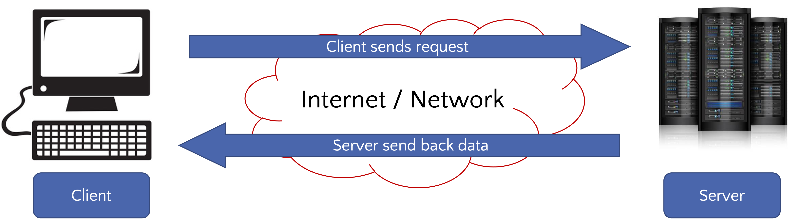
Examples of Servers
| Server | What it does |
|---|---|
| File server | Stores and distributes files. |
| Print server | Manages and distributes printing. |
| Hypervisor server | Hosts virtual machine guest operating systems for remote or shared access. |
| Application server | Runs applications shared by a large number of users. Clients don’t need enough resources to run the applications, and don’t have to maintain them. |
| Mail server | Transfers and stores mail over corporate networks and across the Internet. |
| Web server | Hosts web pages and makes them available across a network to the user’s web browser. |
Server Hardware
Servers vs. Workstations
- Servers perform one or more services for the clients connected to them. They may provide access to shared files, printers and other network resources, or provide email and web hosting.
- Workstations are personal computers. They are used for applications such as word processing, graphic design, development and web browsing.
Server Hardware Components
In many ways, server hardware isn’t that different from workstation hardware. Servers use the same basic components:
- CPUs
- Main memory
- Secondary storage
- Power supplies
However, servers are:
- Noisy
- Power hungry
- In need of good Internet access
- In need of increased security
That is why servers are usually kept in dedicated server centers (or data centers).
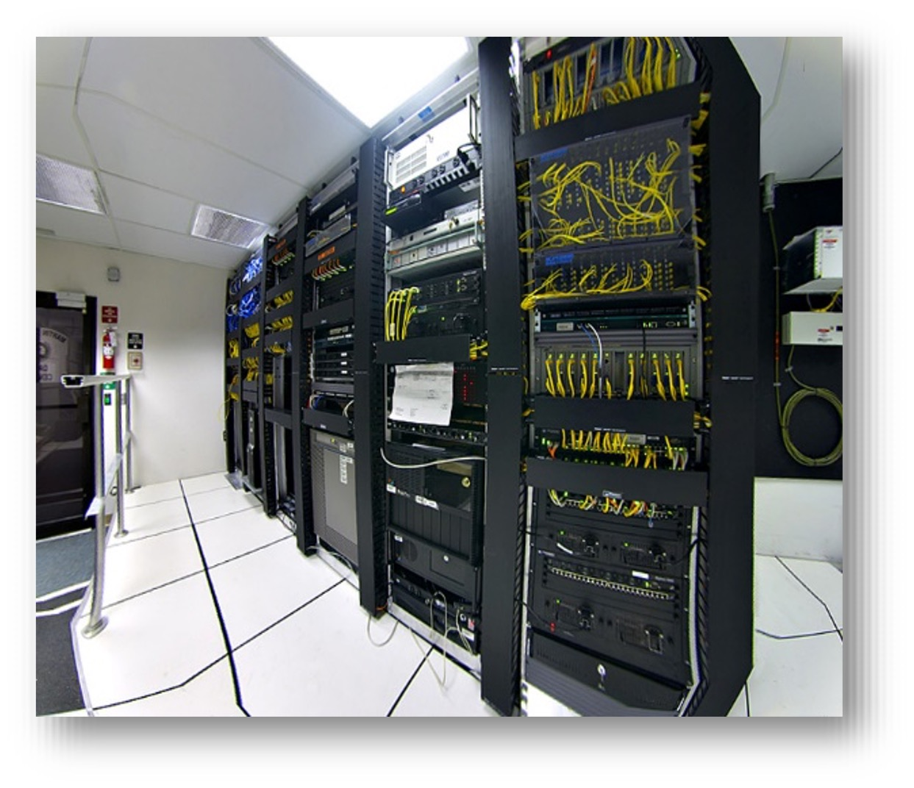
Types of Servers (Form Factors)
There are three main server form factors: tower, rack and blade.
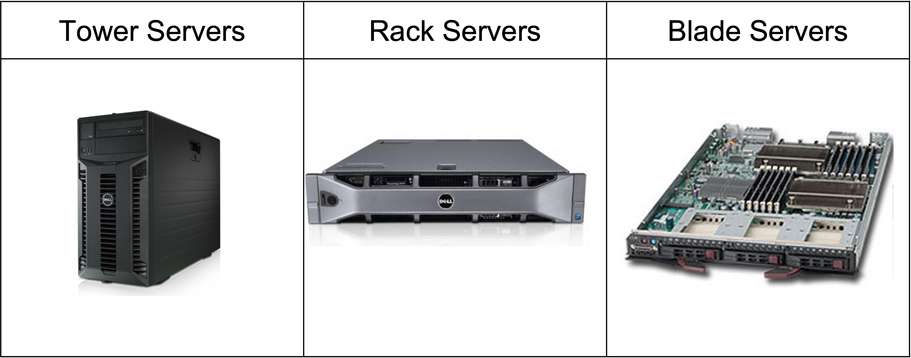
Tower Servers
- Look like PCs.
- Each tower server is a standalone machine.
- Take up space and tend to be noisy.
- Usually used in small data centers.
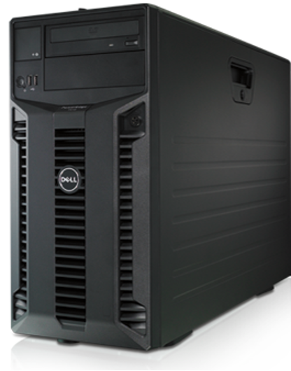
Rack Servers
- Servers mounted in a rack, fixed with screws.
- Uniform width, various heights.
- Server height is measured in rack units (U). A standard rack-mount server is a 1U server, meaning it is 1 rack unit tall.
- Each rack holds multiple servers, typically stacked one on top of the other.
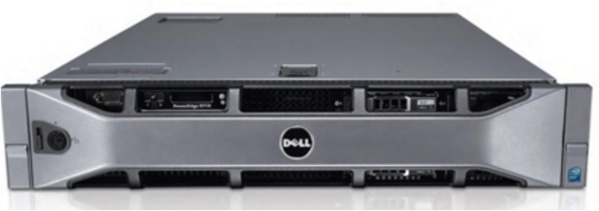
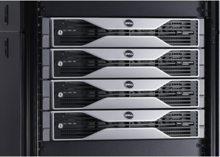
Blade Servers
- Mount inside a special rack called a chassis.
- Tend to be vendor proprietary. For example, you can’t insert a Dell blade server into an HP chassis.
- Lack certain components that rack servers have, such as power supplies. Instead, the chassis provides the power supply, cooling, etc.
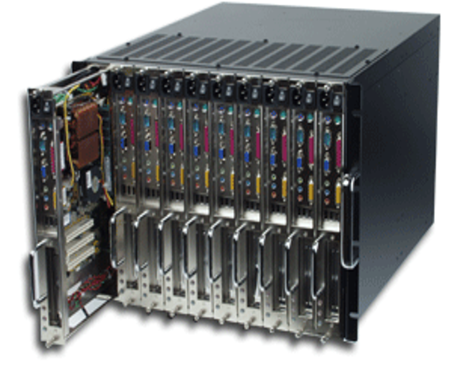
Server Models
Not every network organizes its computers the same way. The network model describes who provides the services and who uses them.
Centralized client-server
In the client-server model, one central server provides a service, and many clients connect to it to use that service. The clients never talk to each other directly: every request goes through the server.
- Advantages: data is stored in one place, so it is easier to back up, secure and manage.
- Disadvantage: the server is a single point of failure. If it goes down, none of the clients can use the service. This is why fault tolerance matters so much for servers (see Fault Tolerance).
Example: when you log in to your John Abbott account or open a website, your computer is the client and the college’s or website’s server answers your request.
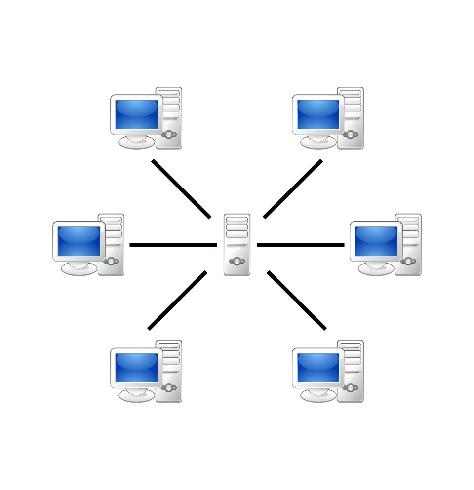
Dedicated servers by role
In larger networks, each service usually runs on its own dedicated server. For example, a file server stores the shared files, and a print server manages the shared printers and their print jobs. All of these servers sit on the same network (e.g. Ethernet) as the clients.
Splitting services across servers means:
- Each server can use hardware suited to its job (lots of storage for a file server, for example).
- If one server fails, the other services keep working.
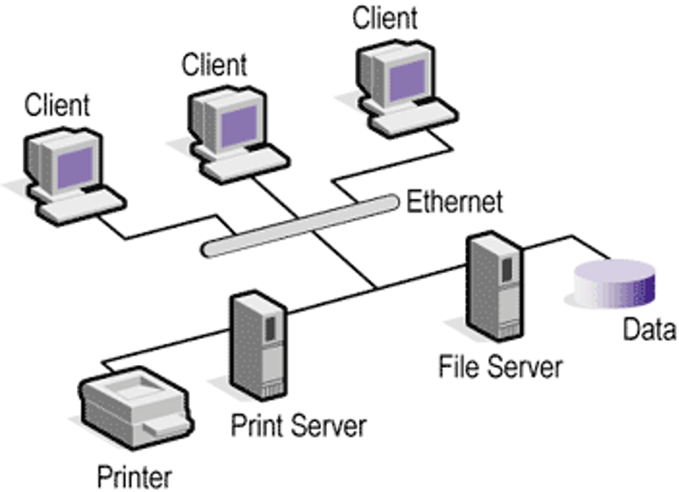
Peer-to-peer (no server)
For comparison, in a peer-to-peer (P2P) network there is no dedicated server. Every computer (a peer) can act as both a client and a server. For example, one PC can share a printer that is plugged into it by USB, so the other PCs can print to it, but only while that PC is turned on.
- Advantages: cheap and simple to set up, since there is no server to buy.
- Disadvantages: weaker security, no central backup, and it doesn’t scale well. It is best suited to small networks (about 10 computers or fewer).
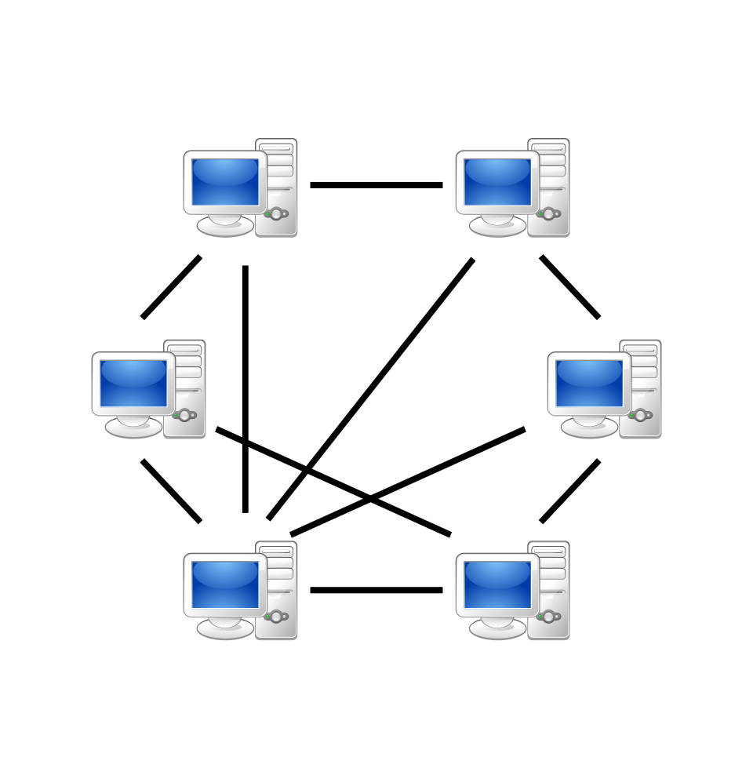
Example: online game servers
Multiplayer games show these models in action. There are three common ways to host a match:
| Model | Who hosts the match? | Pros | Cons |
|---|---|---|---|
| Dedicated server | A server in a data center with no player on it | Fair and stable for everyone. The standard for competitive games | Expensive for the game company to run |
| Listen server | One player’s computer, while that player also plays | Free for the company | The host’s computer and Internet connection affect everyone. If the host leaves, the match can end |
| Peer-to-peer | Nobody: every player connects directly to the others | Cheap, low latency in small groups | Easier to cheat, and doesn’t scale to large matches |
Server Hardware vs. Computer Hardware
- In the hardware sense, a server is hardware intended to host software applications under intense demand.
- Most PCs can act as a server, but a dedicated server has features that make it better suited to production environments, where performance and resilience are important.
- Server hardware components are much more expensive.
- There is a trade-off between performance and cost.
Server Hardware Performance Features
- Advanced CPUs
- More cores
- Extra cache
- Hyperthreading
- Server hard drives
- Resistant to vibrations
- Large in size
- Fast access time
Fault Tolerance
Fault tolerance (or redundancy) is the property that lets a system keep operating properly when one or more of its components fail. Fault tolerance is crucial in server environments.
There are many fault tolerance mechanisms:
- Redundant files, volumes or drives
- Redundant hardware components or servers
- Hardware components with recovery options
Examples of Fault Tolerance
Power: RPS and UPS
- Redundant power supply (RPS): uses more than one power supply, so there is a backup if one fails.
- Uninterruptible power supply (UPS): a kind of power bar that contains a battery. During a power outage or brown-out, it lets low-power operations keep running and high-power operations shut down gracefully.
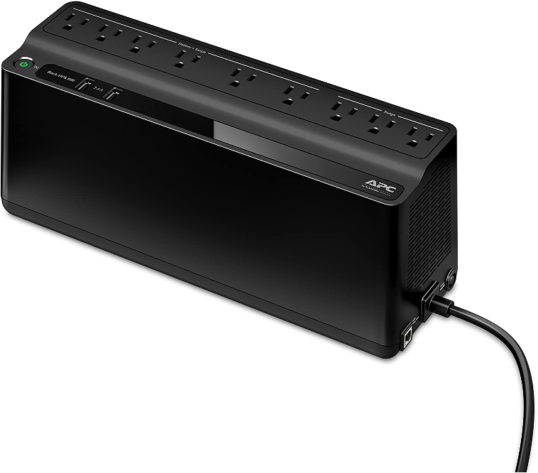
Network: Redundant Network Interface Cards
- Attaching extra NICs (network interface cards) to a server duplicates its network connections, so they can run in parallel.
- This improves performance (combined speed) and provides fault tolerance.
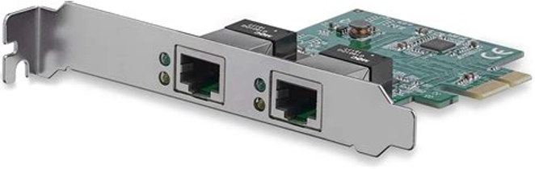
Memory: ECC Memory
- ECC (error-correcting code) RAM automatically uses parity (like in Assignment 1) to detect and correct the most common kinds of internal data corruption.
- ECC RAM contains an extra chip to store the parity information.
- Note: not all motherboards support ECC RAM. Consumer-grade motherboards often skip “non-essential” features like this, which is controversial!
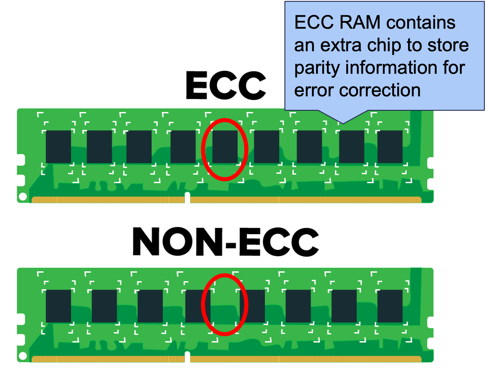
Storage: RAID
- RAID (Redundant Array of Independent Disks) configures a group of storage disks to stripe, mirror, and/or apply parity to the data they store.
- Each of these either improves performance or provides fault tolerance.
- The sections below explain the possible RAID configurations.
RAID Configurations
In the disk diagrams below, each letter is a different file block (A is one file block, B is another, etc.).
A handy tool for visualizing RAID storage capacity: Seagate RAID calculator.
Not RAID: JBOD (“Just a Bunch of Disks”)
What’s the simplest way to combine storage drives? JBOD: Just a Bunch of Disks.
- Data is spanned across all available disks.
- Nothing special is done to read or write data: wherever there is space on a disk, data can be written.
- No fault tolerance (no parity bits or mirroring).
- This is the simplest way to combine the storage of many disks so they appear as one volume.
Combined storage: each disk can be any size. The total storage is simply the sum of the disks (e.g. 1 TB + 2 TB + 3 TB = 6 TB).
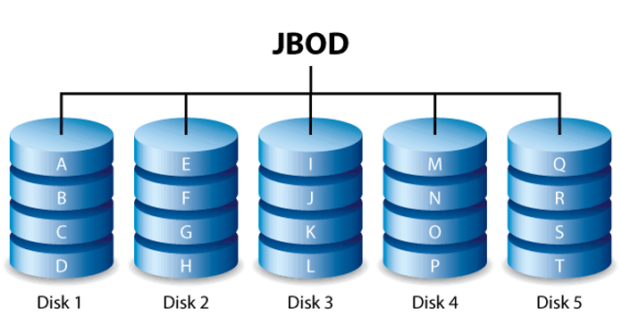
RAID 0: Striping for Performance
RAID 0 is similar to JBOD, with one key difference: data is striped across all available disks. When new data is written, it is cut into blocks and spread across all the disks in the RAID configuration, so every file is written to every disk. (In the diagram, A is one file, and A1, A2, A3, etc. are the blocks containing file A’s data.)
- No fault tolerance (no parity bits or mirroring).
- On HDDs, better read/write speed than one huge disk, because there are more access points to the data.
Combined storage: total capacity = number of disks × size of the smallest disk
Why? Data is striped across all disks, so once the smallest disk is full, no more data can be added. In RAID, it is very common to use disks of the same size to avoid wasting space.
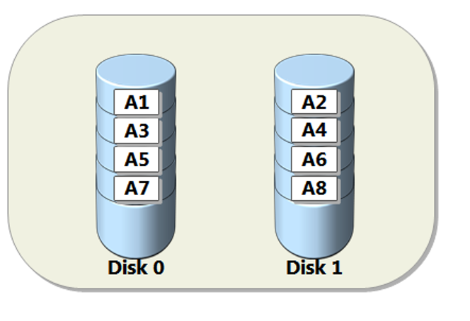
RAID 1: Mirroring for Fault Tolerance
- Disk mirroring: data is copied onto more than one drive at the same time.
- It is not striped, it is copied: file A is divided into four parts, and all four parts are on both disks.
- The simplest and cheapest way to implement fault tolerance.
- Requires a minimum of 2 disks. Each additional disk becomes another mirror: it adds protection, but not storage.
- RAID 1 is almost always used with exactly two disks.
Combined storage: total capacity = size of the smallest disk
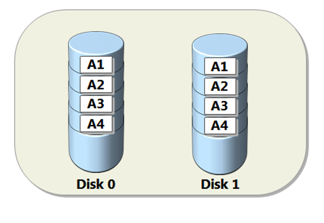
RAID 5: Striping + 1 Disk of Parity
- A common RAID configuration for business servers.
- Data and parity (extra data used for recovery) are striped across 3 or more disks. The equivalent of 1 disk of storage is used for parity.
- If any one disk fails, its data can be re-created automatically from the parity on the remaining disks. If more than one disk fails, the data is lost permanently.
- A great solution for fault tolerance, but it slows down server performance.
Combined storage: total capacity = (number of disks − 1) × size of the smallest disk
Why? One disk’s worth of space is used for parity; the rest is used for storage.
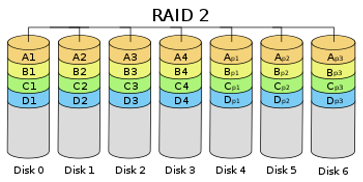
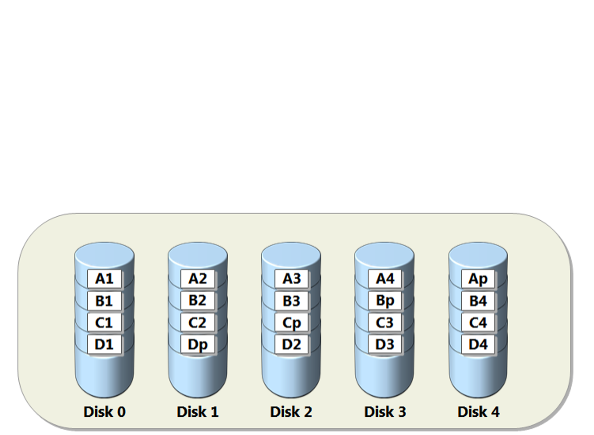
RAID 6: Striping + 2 Disks of Parity
- Identical to RAID 5, but uses one more parity block.
- More robust: two disks can fail.
- Less storage: total capacity = (number of disks − 2) × size of the smallest disk
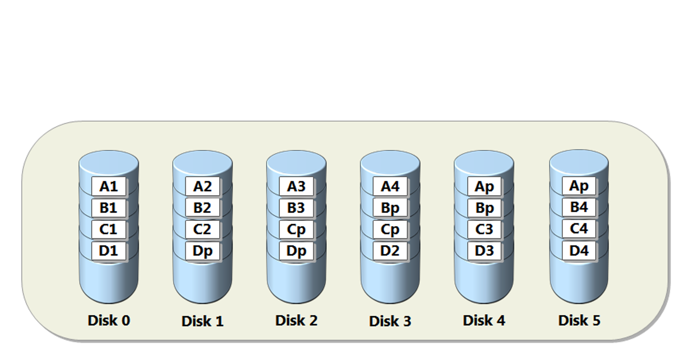
RAID 10 (1+0): Striping + Mirroring
- Combines RAID 0 and RAID 1: the mirroring of RAID 1 with the striping of RAID 0.
- Gives the best performance, but requires twice as many disks (minimum of 4).
Combined storage: total capacity = (number of disks × size of the smallest disk) ÷ 2
Why? Half of the disks are used to mirror the data.
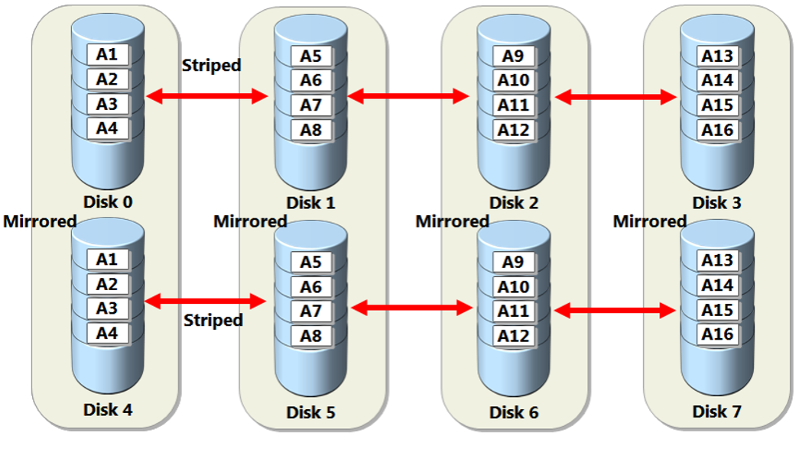
RAID Summary
| Configuration | Technique | Minimum disks | Fault tolerance | Total capacity |
|---|---|---|---|---|
| JBOD | Spanning | 1 | None | Sum of all disks |
| RAID 0 | Striping | 2 | None | Number of disks × smallest disk |
| RAID 1 | Mirroring | 2 | All but one disk can fail | Smallest disk |
| RAID 5 | Striping + 1 parity | 3 | 1 disk can fail | (Number of disks − 1) × smallest disk |
| RAID 6 | Striping + 2 parity | 4 | 2 disks can fail | (Number of disks − 2) × smallest disk |
| RAID 10 | Striping + mirroring | 4 | 1 disk per mirrored pair | (Number of disks × smallest disk) ÷ 2 |
Technical Terms
Spanning
- Disk spanning combines multiple storage disks into one volume.
- JBOD is an example of disk spanning: when one disk is full, the next disk is used.
- Spanning adds no extra efficiency or fault tolerance. It simply lets you combine disks to create larger storage volumes.
Striping
- Disk striping divides data into blocks and spreads the blocks across multiple storage devices.
- Each file is therefore stored on all of the striped disks. This is very different from spanning!
- Different storage systems stripe in different ways (e.g. at the byte or block level).
- Striping provides high performance (faster reads and writes) but low resiliency: if any physical drive fails, data is lost.
Mirroring
- Mirroring writes the same data to more than one disk.
- It is a good choice for applications that need high performance and high availability, such as transactional applications.
- Data can be read from both disks at the same time, so reads are fast. However, writes are slower, because they have to be done twice.
See also: Volume Types on dynamic disks in Windows.
Clusters
- A cluster is a combination of multiple computers or servers whose purpose is to give users access to large amounts of CPU and GPU power.
- Clusters are often made up of sets of computers or supercomputers, each called a node.
- Each node performs the same task, and the nodes are controlled and managed by software called a scheduler.
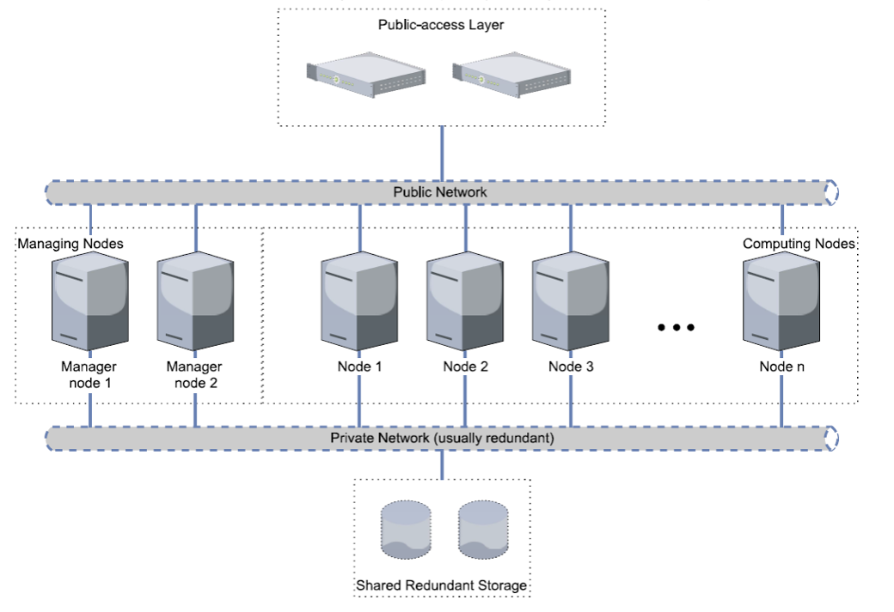
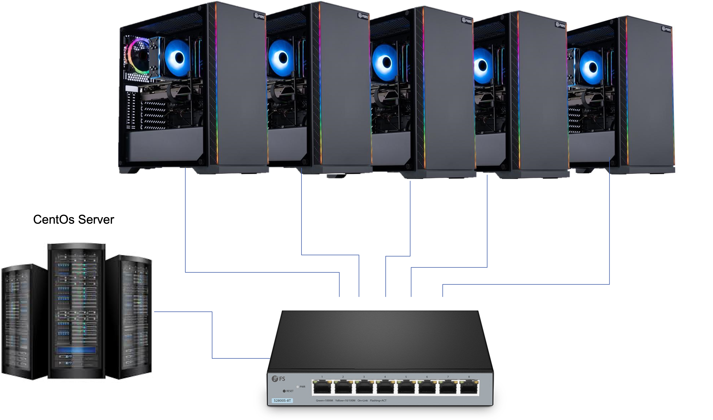
Where Are Clusters Used?
Clusters are used wherever a problem needs more computing power than a single machine can provide:
- Scientific research: weather forecasting, climate modelling, physics and chemistry simulations.
- Medicine and biology: genome sequencing, protein folding, drug discovery.
- Artificial intelligence: training machine learning models on large numbers of GPUs.
- Engineering: simulating car crashes, airflow over aircraft wings, or structural loads on buildings.
- Film and animation: rendering visual effects and animated movies (called a render farm).
- Finance: risk analysis, fraud detection and high-speed trading calculations.
- Web services: large websites and online games spread traffic across many servers to handle millions of users.